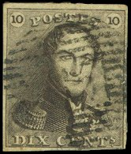
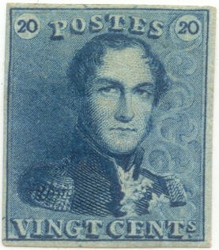
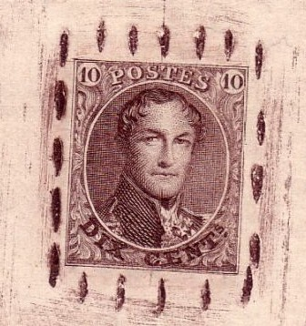

Return To Catalogue - Cancels on the first issues - 1866-1869 Lions - 1869-1892 - 1893-1911 - 1912 Arms and King Albert issue - 1914-15 Red Cross issues - 1915 onwards - Belgian Congo 1886-1893 - Belgian Congo 1894-1908 - Belgian Congo 1909-1920 and miscellaneous- Due, Telegraph, Telephone stamps and proofs - Fiscal, Postal Stationary and Miscellaneous - Railway stamps - Railway official stamps - Moens (philatelic dealer)
Currency: 100 Centimes = 1 Franc
Note: on my website many of the
pictures can not be seen! They are of course present in the
catalogue;
contact me if you want to purchase it.



10 c black brown 20 c blue
These stamps have watermark 'LL in a frame' and were issued 1st July 1849 on handmade paper. The design was made by Jacques Wiener. These stamps were no longer valid after 1st July 1866. Stamps with no watermark are reprints (rare).
Reprints made in 1895 individual stamps with a network printed
all around it, both values, reduced sizes. The paper is not
handmade, but thin and smooth instead. The reprints do not
possess a watermark.
Value of the stamps |
|||
vc = very common c = common * = not so common ** = uncommon |
*** = very uncommon R = rare RR = very rare RRR = extremely rare |
||
| Value | Unused | Used | Remarks |
| 10 c | RRR | RR | 5.25 Million stamps issued |
| 20 c | RRR | R | 5.25 Million stamps issued |
I've seen some forgeries, that appear to be have been made from photographs (sorry, no picture available yet). Also very crude forgeries exist.

Very crude forgery.

('Cachet a barre' cancel)
The only cancel that I have seen on these stamps are the so-called 'Cachet a barre' cancels (or bar killer), used from 1849 to 1864. More info can be found in: Cancels on the first issues.


This red horizontal line was applied by the stamp dealer Moens on remainders. It is known to have
been removed (washed).
Imperforate


1 c green 10 c black brown 20 c blue 40 c red Perforated


1 c green 10 c black brown 20 c blue 40 c red
These stamps exist with several watermarks and with no watermark
Value of the stamps |
|||
vc = very common c = common * = not so common ** = uncommon |
*** = very uncommon R = rare RR = very rare RRR = extremely rare |
||
| Value | Unused | Used | Remarks |
| With watermark 'LL in a frame', imperf | |||
| 10 c | RRR | RR | |
| 20 c | RRR | R | |
| 40 c | RRR | RR | |
With watermark 'LL' (no frame, 1851), imperf |
|||
| 10 c | RR | * | |
| 20 c | RR | * | |
| 40 c | RRR | RR | |
No watermark (1858), imperf |
|||
| 1 c | RR | RR | |
| 10 c | RR | * | |
| 20 c | RR | * | |
| 40 c | RRR | R | |
| No watermark, perforated 12 1/2, 12 1/2 x 13 1/2 or 14 1/2 (1863) | |||
| 1 c | R | R | |
| 10 c | R | * | |
| 20 c | R | * | |
| 40 c | RR | *** | |
Reprints exist of these stamps. They seem to have brighter colours, they are always imperforate.
Reprint of a 40 c value made in 1882 with a pattern of crosses
around the individual stamp

Reprint made in 1895
I have also seen some reprints in the colour black (imperforate, all four values), I've been told that they were made in 1929.
(Black reprints made in 1929)

A 'reprint' from a Bapitec commemoration sheet, made in 1949

A very primitive forgery.

('Cachet a barre')
The above cancel is a so-called 'Cachet a barre' cancel (or bar killer), used from 1849 to 1864. Some cancels with numerals, but with only 8 or 10 bars also exist. I've also seen 'NORD' instaed of a number in a similar cancel. Other railway ('ambulant' or 'spoorweg') cancels exist, for example a bar cancel with 'N II' or 'O I', 'O III' (Ouest I or III).

(Left: badly perforated specimen)
The most usual cancel is the above numeral cancel with dots. According to my information numeral cancels with dots were used from 1864 to 1873 (as in the stamp shown above). More info can be found in: Cancels on the first issues.
Rarer is the use of circular town and date cancels on this issue:
Remainders are cancelled with a red thin bar (Moens cancel). Sometimes this bar is removed and the 'modified' stamps are offered as unused.

Moens cancel.
Some forged Sperati cancels 'ANVERS 29 NOV 7-8M 1853', 'ANVERS 17 JANV 54 5S', 'ANVERS 27 JANV. 54 5S', 'ANVERS 20 FEV 7-8M 1854' and 'MONS 5S .30 11 53' exist. I don't think Sperati used these cancels on forgeries of Belgium, but rather as arrival cancels on letters from other countries (as also stated by the BPA). I've seen the 'ANVERS 27 JANV. 54 5S' used on a forged letter with French Sperati forgeries (see there).


10 c grey 20 c blue 30 c brown 40 c red 1 F violet
These stamps are perforated 14 1/2 x 14 or 15.
Value of the stamps |
|||
vc = very common c = common * = not so common ** = uncommon |
*** = very uncommon R = rare RR = very rare RRR = extremely rare |
||
| Value | Unused | Used | Remarks |
| 10 c | R | c | |
| 20 c | R | c | |
| 30 c | RR | *** | |
| 40 c | RR | *** | |
| 1 F | RRR | RR | |
Imperforate reprints were made in 1895. Futhermore, reprints with stolen plates also have appeared (they have wrong perforation).
Cancels; according to my information numeral cancels with dots were used from 1864 to 1873. Example of such a numeral cancel:
For stamps of Belgium issued from 1866-1869 (Lions), click here.
Links:
http://fauxtimbres.skynetblogs.be/ (a nice site on forgeries of Belgium).
C.O.B. (or COB) = Catalogue Officiel de Timbre-Poste Belgique (stamp catalogue of Belgium)
Forgeries:
"Le faussaire de Wondelgem", Groupe d'Etude des Falsifications, Bruxelles 1992; by Roger Vervisch. I have not seen this publication, but apparently it shows 505 forged overprints from before 1930 from a forger from a certain J.W. of Wondelgem (Belgium).
{kind=link}